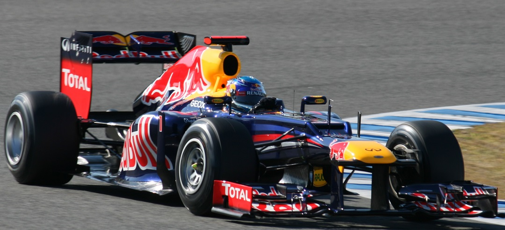
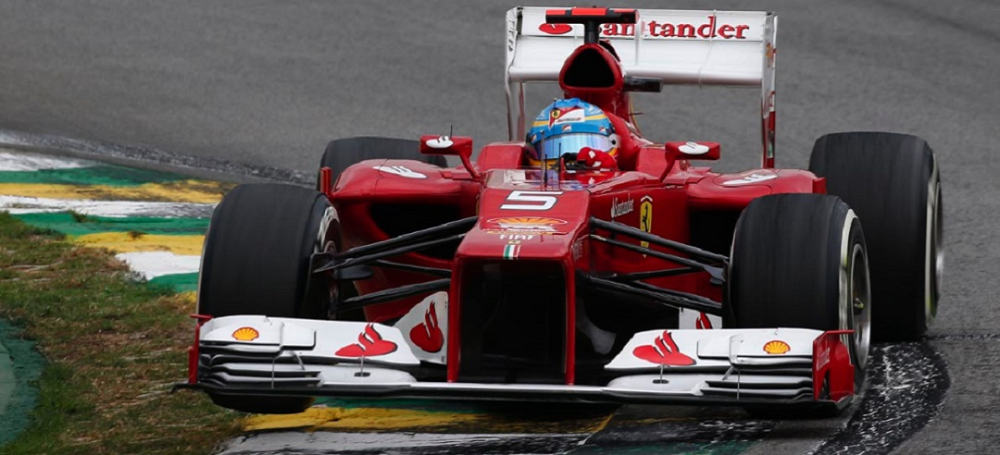
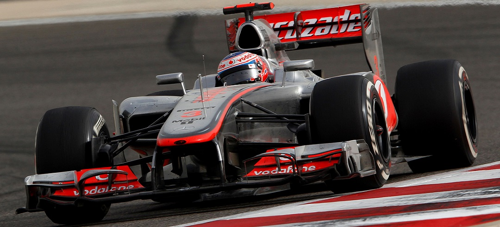
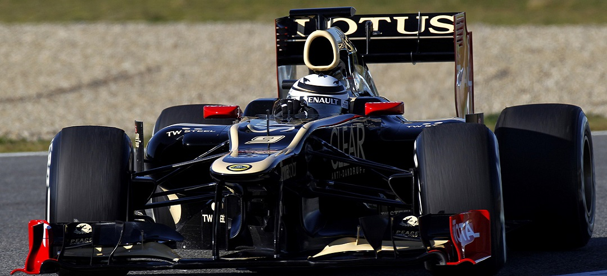

RED BULL RACING
Con el comienzo la temporada 2012 en Melbourne en el trazado de Albert Park, todos los ojos se centraban en Red Bull y su nuevo RB8, con el que querían conquistar otro título. Pero durante la sesión final de clasificación apenas quedaron 5.º y 6.º; aunque después de una difícil carrera, finalmente Sebastian Vettel logró el 2.º lugar y Mark Webber el 4.º. Para la segunda prueba, en el Gran Premio de Malasia durante el transcurso de una tormentosa carrera, Sebastian se posicionaba en 4.º lugar, hasta que se tocó con un piloto de HRT quedando fuera de la zona de puntos. Webber acabó en 4.º puesto. En la tercera carrera en China, una arriesgada estrategia no funcionó de igual forma para los pilotos. Ambos terminaban en los puntos (4.º y 5.º) y así Red Bull obtenía el liderato de constructores. A la cuarta fue la vencida y Vettel ganó su primera carrera de la temporada en Baréin.
A pesar de la prohibición de los escapes soplados, que puso fin a su superioridad y limitó su rendimiento en la primera parte del campeonato; la escudería austríaca supo sobreponerse a ello, mejorando de forma destacable su monoplaza en la segunda mitad del año. Eso permitió a Vettel encadenar cuatro dominantes victorias de forma consecutiva, entre Singapur y la India. En la penúltima carrera del año, en Estados Unidos, Red Bull obtuvo su tercera corona consecutiva. Finalmente, el 25 de noviembre de 2012 en Brasil, Sebastian Vettel consigue su tercer título consecutivo, proclamándose el tricampeón más joven, a pesar de un toque al comienzo de la prueba que le retrasó hasta la última posición.
SCUDERIA FERRARI
Para 2012, Ferrari quiere volver a ganar tras cuatro años sin hacerlo y para ello continúa con la reestructuración en su departamento técnico iniciada el año anterior. Se realizaron nuevas incorporaciones como las de Steve Clark o Hirohide Hamashima, anunciando un enfoque más agresivo en el diseño del coche. El inicio de temporada no fue el deseado y el coche mostró estar lejos de sus rivales, pese a lograr una victoria en condiciones climáticas variables en Malasia. Sin embargo, las mejoras incorporadas al monoplaza funcionan y Alonso consigue ponerse líder del mundial mediada la temporada, tras una épica victoria en Valencia. Tras encadenar varios podios y afianzar el liderato, en buena medida por las retiradas de su máximo rival, Alonso es embestido por Romain Grosjean en Bélgica y sufre un toque con Kimi Räikkönen en Japón. Ambos incidentes le obligan a retirarse en dichas carreras, lo que unido a la mejora del Red Bull hace que pierda el liderato frente a Sebastian Vettel en el Gran Premio de Corea. A pesar del esfuerzo de Ferrari y de Alonso, Vettel y Red Bull se proclamaron campeones nuevamente; pero en contrapartida, la Scuderia conservó el segundo puesto en el mundial de constructores.
El 5 de diciembre de 2012 los editores de la página de internet F1 al día colocan a Ferrari como el quinto mejor equipo de F1 del 2012. Según el portal de la web los editores votaron y puntuaron a los equipos basándose exclusivamente en su forma de trabajar, tanto en la pista como en la fábrica, así como de cara a los medios de comunicación, dejando a un lado los éxitos durante el año, es decir, la forma de trabajar como equipo y encajando cada una de las distintas piezas de la estructura.
MCLAREN
La temporada inició con una fuerte clasificación en el Gran Premio de Australia, donde el equipo coparía las dos primeras posiciones y luego en carrera Jenson Button se haría con la victoria mientras Hamilton ocuparía la última plaza del podio. Hamilton, en las siguientes dos carreras, ocuparía ese mismo puesto (tercer lugar), mientras Button solo lograría un segundo puesto en el Gran Premio de China y quedaría lejos de los puntos en el Gran Premio de Malasia al llegar en la posición 14.ª.
Posteriormente llegarían tres Grandes Premios que depararían resultados con poca producción de puntos para el equipo y que resultaron algo decepcionantes, teniendo en cuenta que en el Gran Premio de España, Hamilton logró la pole pero un error en los cálculos del equipo no le permitieron a Hamilton volver al box con la cantidad necesaria de combustible para su revisión, lo que terminó en la descalificación del inglés y la cesión de la pole al Williams de Pastor Maldonado, que a la postre ganaría el Gran Premio. Mientras, Button sufrió la primera avería de la temporada del MP4-27 en el Gran Premio de Baréin.
LOTUS
Siendo finalizada la era como equipo de carreras, Renault pasa a partir del 2012 de ser el gran equipo campeón del mundo de Fórmula 1 con Fernando Alonso a servir de plataforma para el regreso definitivo de la escudería Lotus. El equipo británico anunció el fichaje del campeón del mundo de 2007, Kimi Räikkönen, dos días después del GP de Brasil 2011. La continuidad de Vitaly Petrov no estaba asegurada, y se barajaban entonces varias opciones. Finalmente, se anunció que el piloto que acompañaría a Räikkönen sería el francés Romain Grosjean.
El nuevo monoplaza del equipo, llamado Lotus E20, fue presentado el 5 de febrero de 2012 en la sede del equipo en Enstone. Con el regreso definitivo del mítico nombre a la máxima categoría y la contratación de Kimi Räikkönen, la escudería pretende volver a luchar por las victorias en los próximos años. Lotus se presentó en Australia con altas expectativas, ya que consiguieron tiempos rápidos en los tests de pretemporada.
También puedes llamarnos por teléfono directamente
902 12 21 22